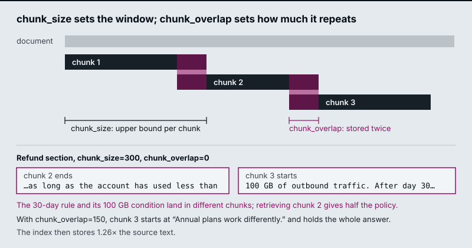
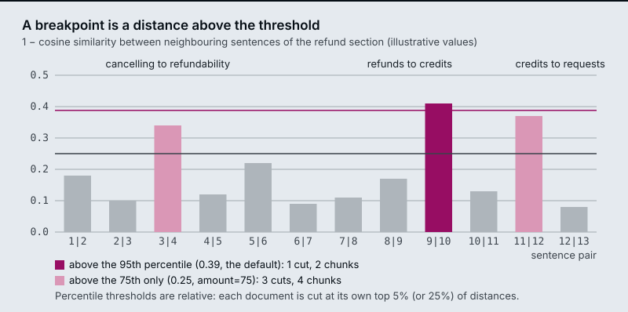

The running example is the “Refunds and cancellations” section of the Larkspur Cloud handbook, 1,111 characters long, and one golden question: How long do I have to get a full refund on an annual plan? The answer is one 141-character sentence: You can get a full refund on an annual plan within 30 days of purchase, as long as the account has used less than 100 GB of outbound traffic.
TL;DR
- Small chunks retrieve precisely but can cut a fact in two; large chunks keep facts whole but dilute the embedding and cost tokens. The right size comes from measurement on your own corpus.
- Overlap repeats the tail of one chunk at the head of the next. It rescues facts that straddle a boundary, but only when the cut piece fits inside the overlap, and it inflates the index.
- Semantic chunking cuts where neighbouring sentences drift apart in embedding space. The breakpoint threshold is computed from each document’s own distances; the default
percentiletype always produces some cuts, whilestandard_deviationandinterquartilecan find none. - Propositions are atomic, self-contained facts written by an LLM. They retrieve sharply, cost an LLM call per chunk, and need a grading pass because an LLM can invent text and a splitter cannot.
- Structure-aware splitting uses the document’s own boundaries (headings, HTML tags, code blocks) first, and falls back to size limits second.
Mental model
flowchart TD
D[/Document from M12/] --> Q1{"Markup carries the<br/>boundaries?"}
Q1 -- yes --> SA["Structure-aware splitter<br/>headers become metadata<br/>long sections capped by size"]
Q1 -- no --> Q2{"Dense facts where<br/>precision matters?"}
Q2 -- yes --> P["Proposition chunking<br/>LLM + grading"]
Q2 -- no --> Q3{"Topic shifts<br/>mark the boundaries?"}
Q3 -- yes --> SE["SemanticChunker<br/>breakpoint threshold"]
Q3 -- "no: plain prose" --> R["RecursiveCharacterTextSplitter<br/>size + overlap"]
Every route then feeds the embedder (M14) and ends with the same check. Read a sample of the chunks, because the parameters say what the splitter was asked to do and only the chunks show what it did, then run the golden set.
Chunk size and overlap
Lesson 13.1: Splitter fundamentals: character, recursive, token and structure-aware. Notebooks: 01a_document_splitting_and_chunking.ipynb, 01b_document_splitters_and_chunkers.ipynb (optional), 01c_text_splitters_and_chunking_strategies.ipynb (optional)
RecursiveCharacterTextSplitter tries the separators ["\n\n", "\n", " ", ""] in order. It splits on the first one present, merges pieces back up to chunk_size, and recurses into any piece that is still too long. chunk_overlap is how many trailing characters of one chunk it may repeat at the start of the next.
- The splitter gets the 1,111-character refund section, with chunk_size 300 and no overlap.
- It splits on the first separator present, the blank line, which gives five pieces of 25, 262, 525, 151 and 148 characters.
- The first two pieces fit together under 300, so they merge into chunk 1 (287 characters).
- The 525-character paragraph is over 300, so the splitter recurses into it with the next separator. A line break only peels off the blank line in front.
- It falls through to spaces and splits the paragraph into 95 words.
- The words merge back up to 300 characters, giving chunk 2 (297) and chunk 3 (225).
- The last two paragraphs fit together as chunk 4 (297).
- The answer sentence lands 113 characters in chunk 2 and 27 in chunk 3, cut after “used less than”.
At chunk_size=300 the blank lines give five pieces of 25, 262, 525, 151 and 148 characters, each counting the blank line in front of it. The first two merge into chunk 1 (287 characters). The 525-character paragraph is too long, and a line break only peels off its leading blank line, so the splitter falls through to spaces, splits the paragraph into 95 words and merges them into chunks 2 and 3. The last two paragraphs merge into chunk 4. The cut between chunks 2 and 3 lands inside the answer sentence.

The interactive lab runs a JavaScript port of the LangChain splitter on the refund section; it matches langchain_text_splitters exactly at all 1,061 slider positions. Five settings from the lab:
chunk_size / chunk_overlap |
Chunks | Stored ÷ source | Answer in one chunk? | Answer share of its chunk |
|---|---|---|---|---|
| 140 / 0 | 11 | 0.99× | No: the sentence is longer than the chunk | none |
| 300 / 0 | 4 | 1.00× | No: cut after “…used less than” | none |
| 300 / 150 | 5 | 1.26× | Yes, chunk 3 | 47% |
| 500 / 50 | 4 | 1.04× | Yes, chunk 2 | 28% |
| 1200 / 0 | 1 | 1.00× | Yes, the whole section | 13% |
- A chunk smaller than the fact can never hold it. At 140 characters, no overlap helps.
- A boundary cut produces a confident half-answer. At 300/0, chunk 2 says refunds are available “within 30 days of purchase, as long as the account has used less than” and stops. A retriever that returns chunk 2 gives the model the 30-day rule without the 100 GB condition.
- Overlap only rescues a piece that fits inside it. At 300/100 the answer is still cut, because the part left in chunk 2 is longer than 100 characters. At 300/150 it fits, and the index stores 26% more text.
- Bigger chunks keep facts whole and dilute them. At 1200 the answer is 13% of the chunk; the other 87% is about monthly plans, refund timing and credits. The chunk’s embedding averages all of it, and the model reads all of it.
At 500/50 the splitter leaves a 72-character stub (“to the original payment method and take 5 to 10 business days…”); tiny trailing chunks like this retrieve badly, so merge them or set a minimum size. At 300/150, chunk 4 starts mid-phrase with “GB of outbound traffic”, because overlap carries whole words and ignores sentence boundaries.
Measure length in tokens when the limit that matters is the embedding model’s input or the prompt budget. RecursiveCharacterTextSplitter.from_tiktoken_encoder(...) keeps the recursive separators and counts tokens, and the notebook makes it the default for prose. English prose runs about four characters per token, but the ratio shifts by 2× or more for code, URLs and compound words, so a character limit drifts across content types. Characters are fine for comparing settings on one document, as the lab does.
Structure-aware splitting
Many documents already mark their own boundaries. Splitting on them keeps each section intact and gives you metadata for free.
| Content | Splitter | What it uses |
|---|---|---|
| Markdown | MarkdownHeaderTextSplitter |
#, ##, ###; header text goes into metadata ({"Header 2": "Refunds"}) |
| HTML | HTMLHeaderTextSplitter, HTMLSectionSplitter |
<h1> to <h6> and sections |
| Code | RecursiveCharacterTextSplitter.from_language(Language.PYTHON, …) |
class, def, then blank lines |
| Elements from M12 | Group Unstructured elements by parent_id |
Titles and their children |
flowchart LR
MD["handbook.md<br/># Billing<br/>## Refunds<br/>## Credits"] --> H[MarkdownHeaderTextSplitter]
H --> S1["chunk: Refunds text<br/>metadata: Header 2 = Refunds"]
H --> S2["chunk: Credits text<br/>metadata: Header 2 = Credits"]
S1 --> CAP["RecursiveCharacterTextSplitter<br/>only if a section is too long"]
S2 --> CAP
Run a size-based splitter after the structural one, because one long section can still exceed your limit. Use the header metadata in two places. Filter on it at query time (“only the Refunds section”), and prepend it to the chunk text so the embedding knows which section a sentence came from; M16 calls that a contextual chunk header.
Key Takeaways
- A chunk smaller than the fact can never hold it, and overlap rescues only a piece that fits inside it. A boundary cut hands the model a confident half-answer.
- Bigger chunks keep facts whole but dilute them: at 1200 characters the refund answer is 13% of its chunk. Merge tiny trailing chunks, and count tokens when a model limit applies.
- Split on the document’s own structure first, then cap long sections with a size-based splitter. Use header metadata for filtering and as a prefix in the chunk text.
Check yourself
1. At chunk size 300, an overlap of 100 leaves the refund answer cut, but an overlap of 150 keeps it whole. Why?
Overlap only rescues a piece that fits inside it. At 300/100 the part of the answer left in chunk 2 is longer than 100 characters, so it is still cut. At 300/150 it fits, and chunk 3 holds the whole answer, at the cost of storing 26% more text (1.26× the source).
2. You split the refund section at chunk size 1200 with no overlap. Does the answer survive, and what does it cost?
The answer survives, because the whole section becomes one chunk, but it is only 13% of that chunk. The other 87% is about monthly plans, refund timing and credits, and the chunk’s embedding averages all of it while the model reads all of it. Bigger chunks keep facts whole and dilute them.
3. Your handbook is Markdown, and after splitting on headers one section is still longer than your limit. What do you do, and how do you use the header metadata?
Run a size-based splitter such as RecursiveCharacterTextSplitter after the structural one, so the long section is capped. Use the header metadata twice: filter on it at query time (“only the Refunds section”), and prepend it to the chunk text so the embedding knows which section a sentence came from. M16 calls that a contextual chunk header.
Breakpoint threshold
Lesson 13.2: Semantic chunking: breakpoints on embedding distance. Notebooks: 02a_semantic_chunking.ipynb, 02b_semantic_chunking_walkthrough.ipynb (optional), 02c_semantic_chunking_rag_techniques.ipynb (optional)
Semantic chunking cuts on meaning instead of length:
- Split the text into sentences.
- Embed each sentence, combined with its neighbours (
buffer_size=1adds one sentence on each side). - Compute the distance between consecutive sentences:
1 − cosine similarity. - Mark every distance above the breakpoint threshold as a boundary.
- Group the sentences between boundaries into chunks.

SemanticChunker turns the distances into a threshold in one of four ways:
breakpoint_threshold_type |
Default amount | Cuts where the distance is above… |
|---|---|---|
percentile |
95 | the 95th percentile of this document’s distances |
standard_deviation |
3 | mean + 3 standard deviations |
interquartile |
1.5 | mean + 1.5 × IQR |
gradient |
95 | the 95th percentile of the distance gradient (for text where everything is similar) |
All four are computed from the document’s own distances, so a threshold tuned on one corpus does not transfer to another. In the diagram, the refund section has three real topic changes, but the default 95th percentile cuts only once. A 13-sentence section has 12 distances, and only the largest clears their 95th percentile. Lowering the amount to 75 cuts at all three.
percentile always cuts somewhere, so a document with no topic change still gets split at its own top 5% of distances. standard_deviation and interquartile can decide a document has no boundary at all. On a short text, no distance is 3 standard deviations above the mean, so the default standard_deviation returns one chunk. That is correct for a document about one thing, and it leaves chunk size unbounded.
Only local change counts. The comparison is sentence i against sentence i + 1, so a topic that drifts across five sentences never produces one large distance and never triggers a cut; gradient helps somewhat. Read the chunks before you trust the boundaries, and cap chunk size afterwards, because semantic chunks can grow past the embedding model’s limit.
The cost is a full extra embedding pass over every sentence at index time, before the chunks themselves are embedded.
flowchart LR
S1[Sentence i] --> E1[embed i-1..i+1]
S2[Sentence i+1] --> E2[embed i..i+2]
E1 --> DIST["distance = 1 − cos"]
E2 --> DIST
DIST --> T{"distance ><br/>threshold?"}
T -- yes --> CUT[Start a new chunk]
T -- no --> KEEP[Same chunk]
Key Takeaways
- Semantic chunking embeds each sentence with its neighbours and cuts where the distance between consecutive sentences clears a threshold.
- Every threshold type is relative to the document’s own distances, so tune it per corpus.
percentilealways cuts somewhere;standard_deviationmay return one chunk. - Only local change triggers a cut, so slow drift is missed. Read the chunks, cap their size afterwards, and budget an extra embedding pass over every sentence.
Check yourself
1. A topic drifts slowly across five sentences. Why does semantic chunking never cut there?
The distance compares sentence i with sentence i + 1 only, so a gradual drift never produces one large distance to clear the threshold. The gradient threshold helps somewhat. Read the chunks before you trust the boundaries.
2. The 13-sentence refund section has three real topic changes, yet the default percentile threshold cuts only once. Why, and what changes that?
A 13-sentence section has 12 distances, and only the largest clears their 95th percentile. Lowering the amount to 75 cuts at all three topic changes. Every threshold type is computed from the document’s own distances, so a value tuned on one corpus does not transfer to another.
3. The standard deviation threshold returns a short document as one chunk. Is that a bug, and what should you add after the chunker?
Not necessarily: on a short text no distance is 3 standard deviations above the mean, and one chunk is correct for a document about one thing. But it leaves chunk size unbounded. Cap chunk size afterwards, because semantic chunks can grow past the embedding model’s limit.
Propositions
Lesson 13.3: Proposition chunking with LLM quality checks. Notebooks: 03a_proposition_chunking.ipynb, 03b_proposition_chunking_rag_techniques.ipynb (optional)
A proposition is one fact written so it stands alone. It has to be:
- Atomic: one claim. “Annual plans can be refunded within 30 days and refunds take 5 to 10 business days” is two.
- Self-contained: no unresolved references. “It takes 5 to 10 business days” means nothing once retrieved alone; “A Larkspur Cloud refund takes 5 to 10 business days to appear” does.
The refund sentence becomes three propositions:
- Larkspur Cloud gives a full refund on an annual plan requested within 30 days of purchase.
- A full refund on a Larkspur Cloud annual plan requires the account to have used less than 100 GB of outbound traffic.
- After day 30, a Larkspur Cloud annual-plan refund is prorated to the unused whole months, minus a 15% early-termination fee.
Each proposition names its own subject and condition, so the golden question can match proposition 1 and the retriever can return proposition 2 beside it.
flowchart LR
C[Source chunk] --> G["LLM: rewrite as<br/>atomic, self-contained facts"]
G --> P[Propositions]
P --> J{"Grade each one<br/>against the source:<br/>supported, self-contained,<br/>atomic"}
J -- pass --> IDX[(Index propositions<br/>with source chunk id)]
J -- fail --> DROP[Drop or regenerate]
Grade every proposition against its source chunk before indexing it. A splitter can only cut text, while an LLM can merge two facts, drop a qualifier (“less than 100 GB” disappears) or state something the source only implied. The mandatory notebook’s grader returns three yes-or-no checks through structured output (supported by the source with nothing added, self-contained, atomic) plus a short issue note, and keeps only propositions that pass all three. The optional 03b notebook scores accuracy, clarity, completeness and conciseness from 1 to 10 and drops anything under 7 on any of them. In the notebook the grader is the same model as the generator, so it shares its blind spots and can pass a proposition it should reject. Treat it as a filter for obvious damage; independent verification needs a different model or a human. Keep the source chunk id in metadata so you can show the original text at answer time.
Cost decides where propositions are worth it: one LLM call per source chunk to generate, about one more to grade, and usually several times as many vectors. Use them for dense, high-value text (policies, specs, medical or legal facts) where a missed qualifier is expensive, not for a whole document lake.
Key Takeaways
- A proposition is one atomic, self-contained fact that names its own subject and condition, so it still makes sense when retrieved alone.
- Grade every generated proposition against its source before indexing, because an LLM can merge facts or drop a qualifier. Keep the source chunk id in metadata.
- A grader that is the same model shares its blind spots. With one or two LLM calls per chunk and several times the vectors, keep propositions for dense, high-value text.
Check yourself
1. What two properties make a proposition, and why does each matter once it is retrieved alone?
It is atomic, holding one claim, and self-contained, with no unresolved references. “It takes 5 to 10 business days” means nothing when retrieved alone, while “A Larkspur Cloud refund takes 5 to 10 business days to appear” does. Because each proposition names its own subject and condition, a question can match one and the retriever can return a related one beside it.
2. A generated proposition reads: Annual plans can be refunded within 30 days and refunds take 5 to 10 business days. Which grader check fails, and what happens to it?
The atomic check fails, because the sentence makes two claims. The mandatory notebook’s grader keeps only propositions that pass all three checks (supported by the source, self-contained, atomic), so this one is dropped or regenerated.
3. Your team plans to turn its whole document lake into propositions, graded by the same model that writes them. What two concerns do you raise?
Cost: one LLM call per source chunk to generate, about one more to grade, and usually several times as many vectors, so keep propositions for dense, high-value text such as policies and specs. Grading: a grader that is the same model shares the generator’s blind spots and can pass a proposition it should reject. Treat it as a filter for obvious damage, and use a different model or a human for independent verification.
Choosing chunk size
Lesson 13.4: Choosing chunk size empirically: retrieval quality, faithfulness, latency. Notebooks: 04a_choosing_chunk_size.ipynb, 04b_choose_chunk_size_llamaindex.ipynb (optional)
No chunk size is right in general. It depends on how dense the facts are, how specific the questions are, the embedding model, the document’s structure, and k with the token budget, since chunk_size × k has to fit the prompt. The notebook replaces the habit of copying 1000/200 or 512/50 with a procedure:
- Build a small labelled set: a question plus a string that must appear in a correct chunk. Real user queries are the best source. The notebook uses 14 questions over 8 policy sections.
- Sweep chunk size with everything else fixed. The notebook tries 64 to 768 tokens with
from_tiktoken_encoder, overlap at 15% of the size andk = 3. - Score each setting with
hit@kand a margin, how much closer the best correct chunk is to the question than the best wrong one.hit@ksaturates at 1.0; the margin keeps separating settings after that. A question whose gold string no chunk contains counts as a failure, because the splitter cut it. - Put cost in the same table: index tokens (paid once), tokens per query (
chunk_size × k, paid on every request) and the chunk count. - Take the plateau, not the peak. Keep every size within 3% of the best margin, then pick the cheapest of those.
- Re-score the top three sizes on random halves of the labelled set. If the winner changes between halves, the sizes are indistinguishable at this sample size, so pick on cost.
Sweep overlap afterwards, at the chosen size. It moves the curve far less than size does and grows the index linearly; the notebook keeps 10 to 20% of chunk_size as cheap insurance against a fact straddling a boundary. A flat curve is a finding too. It means chunk size is not the bottleneck, so stop tuning it and look at retrieval, query rewriting or reranking.
The optional LlamaIndex notebook measures the answer side instead. GPT-4o judges the faithfulness and relevancy of answers at chunk sizes 128 and 256, and the notebook records response time. LLM judges cost a model call per question per setting, so use the deterministic sweep to narrow the range and the judges to confirm it.
If small chunks win on precision and large ones win on completeness, stop looking for one number. Index small chunks and return their larger parent (M16 parent-document retrieval) or expand to neighbouring chunks after retrieval (M19).
Choosing a strategy
| Strategy | Boundaries come from | Index-time cost | Best for | Watch out for |
|---|---|---|---|---|
| Recursive character | Separators + size | None | Default for prose | Facts cut at boundaries |
| Token | Tokenizer + size | None | Hard model limits | Cuts mid-sentence |
| Structure-aware | Markup | None | Markdown, HTML, code, manuals | Oversized sections |
| Semantic | Embedding distance | One embedding per sentence | Long prose with topic shifts, no markup | Relative threshold; unbounded chunk size |
| Propositions | An LLM | 1 or 2 LLM calls per chunk | Dense, high-stakes facts | Invented or dropped details without grading |
Key Takeaways
- Choose chunk size by sweeping it on a labelled set with everything else fixed. Score
hit@kand the margin, and put index tokens andchunk_size × kper query in the same table. - Take the plateau, not the peak: keep sizes within 3% of the best margin and pick the cheapest. Tune overlap afterwards at 10 to 20% of the size.
- A flat curve means chunk size is not the bottleneck. When small chunks win precision and large ones completeness, index small and return the parent.
Check yourself
1. Why does the chunk-size sweep score each setting with a margin as well as hit at k?
hit@k saturates at 1.0, and after that it cannot tell settings apart. The margin, how much closer the best correct chunk is to the question than the best wrong one, keeps separating them.
2. Three sizes land within 3% of the best margin, and the winner changes when you re-score them on random halves of the labelled set. Which size do you pick?
The cheapest of the three. Taking the plateau rather than the peak already points there, and a winner that changes between halves means the sizes are indistinguishable at this sample size. Cost is what separates them: tokens per query are chunk_size × k, paid on every request.
3. You must chunk long prose reports that shift topic often and carry no markup. Which strategy fits, and what do you watch for?
Semantic chunking, which puts boundaries where the embedding distance jumps. It costs one embedding per sentence at index time. Watch its relative threshold and its unbounded chunk size.
Interactive lab
Chunk size and overlap: open the file in a browser. Click 300 and 0 to see the refund answer cut after “used less than”, then 300 and 150 to watch overlap carry it whole into chunk 3, and 1200 and 0 to see the answer shrink to 13% of its chunk.
How it connects
- Before: M12 decides what text and structure reach the splitter; M11 gives the baseline the M13 lab is measured against.
- Next: M14 embeds these chunks; M16 changes what gets indexed (parent documents, multi-representation, contextual headers) when no single chunk size works.
Interview Spotlight: 5 Questions You Might Get Asked
Production questions in the style of OpenAI, Anthropic and Google interviews for applied AI roles.
1. Your support assistant tells a customer “Annual plans are refundable within 30 days” and the customer gets a refund denied: they had used 300 GB of traffic. The retrieved chunk is correct as far as it goes. What happened, and what do you change?
What a strong answer covers:
- Recognises a boundary cut: the condition (“less than 100 GB”) sits in the next chunk
- Confirms it by printing both chunks and their scores for this question, rather than guessing
- Fixes it at index time: structure-aware or larger chunks for policy text, enough overlap to carry the condition, or propositions that keep each condition with its rule
- Adds the case to the golden set, with a check that the answer mentions the condition
2. A teammate set chunk_size=2000 “so nothing gets cut”. Hit rate went up, but answers got worse and the token bill doubled. Explain why, and propose a fix that keeps the hit rate.
What a strong answer covers:
- Large chunks raise hit rate because almost everything is “in” some chunk, but each one mixes topics, diluting the embedding and adding distractors
- Measures faithfulness and correctness, not only hit rate, plus tokens per answer
- Proposes small chunks for matching with larger parents (or neighbour expansion) for context, or a reranker to cut what reaches the model
- Validates with a sweep on the golden set, not a single comparison
3. You are indexing a 50,000-page internal wiki in Markdown and a 2,000-page set of scanned legal contracts. Would you use the same chunking strategy for both?
What a strong answer covers:
- No: the wiki has markup, so header-based splitting with header metadata, capped by size
- Contracts have long clauses where qualifiers matter, and OCR noise; clause-aware splitting, overlap, and possibly propositions for key obligations, with grading
- Budgets the cost: propositions over 2,000 pages may be affordable; over 50,000 they probably are not
- Uses separate golden sets per corpus, because the right settings differ
4. You switch from recursive to semantic chunking. How do you know in production that it helped, and how would you notice if it silently got worse after a content change?
What a strong answer covers:
- Compares against the recursive baseline on the same golden set: hit rate, faithfulness, latency, index size
- Monitors the chunk length distribution; semantic chunks can balloon on uniform text or fragment on noisy text
- Watches the extra embedding cost at index time, and re-runs the golden set when the embedding model changes, because breakpoints depend on it
- Spot-checks boundaries on newly ingested document types
5. Proposition chunking improved retrieval precision in your offline eval. Before shipping, what failure mode worries you most, and how do you guard against it?
What a strong answer covers:
- The LLM rewriting step can drop qualifiers, merge facts or hallucinate, and the index would then serve text the source never said
- Grades every proposition against its source chunk (accuracy, completeness) and drops failures
- Keeps the source chunk id so answers cite and show the original text, not only the proposition
- Samples graded propositions for human review, and tracks the cost of regeneration when the source changes
Key Takeaways
- The chunk boundary decides whether a fact can be retrieved whole. Read the chunks as well as the parameters.
- Overlap only rescues a cut piece that fits inside it, and you pay for it in storage.
- Semantic thresholds come from each document’s own distances and do not transfer between corpora; propositions need a grading pass; structural boundaries come first when the document has them.
- Choose chunk size by sweeping it on your golden set against the M11 baseline. If no size wins on both precision and completeness, index small and return large (M16).